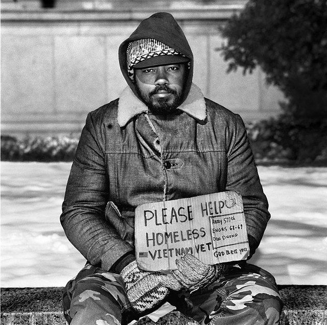
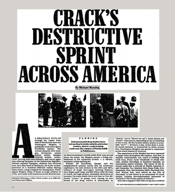

We Didn't start the fire is a song written by American musician Billy Joel. It's lyrics consist of over 100 headline events in United States history between 1949, when Joel was born, and 1989, when the song was written. Many of the listeners at the time understood most of the references in real time, which goes to show how major they were.
In the 1980s, the US government went into debt for the same reason most individuals go into debt. They spent more than they could take in. Most of this money went to the public in trust funds. At the time the public held 3.4 trillion dollars of the national federal debt.
This influx in debt was in part influenced by World War 2. After the war, the US debt to GDP ratio was record-breaking 113% and the debt was $2.87 trillion in today's money. After the war, the US did not try to pay back the debt since they were the world superpower. Their economy grew and the debt became less and less significant.
The 1980s recession was sparked by Paul Volcker, the head of the federal reserve, who increased interest rates to help with inflation. On top of that, President Ronald Reagan cut taxes and increased defense and social spending. Combined, these three factors increased the postwar Debt-to-GDP ratio to 49% in the early 1990s.
In the 1980s, re-entering society can be a very challenging time for veterans. They usually had entered service right out of school, never had a job, and did not go to college. This causes the majority of veterans to become homeless, jobless and surviving on the kindness of passersby.
There are many challenges vets face when returning from war that they usually get no help tackling. These include a shortage of low skill jobs, high housing costs, very little family, mental issues, and substance abuse. These people have been fighting for our country, but when they are done we just forget about them. There were aids that tried to help them, such as the GI bill and the VA, but the veterans say they are very ineffective. These shelters just don’t have the capacity for the amount of veterans that need help which causes many to fend for themselves on the streets.
The AIDS disease was not new in the 1980s, it just started spreading very rapidly. It arrived in the United States in the 1970s but went unnoticed for 10 years until an outbreak began. AIDS is an STD that breaks down the Human immune system making you very susceptible to other illnesses. It usually facilitates death and id very dangerous to humans. Between 1980 and 2000 the scare of AIDS was very real. It was considered an epidemic by the CDC and between 1981 and 2000 every state had a confirmed case.
The creation of crystalized cocaine and a large shipment of it to the US sparked the cocaine boom of the 1970s. Because it was comparatively abundant it was more accessible to people than ever before, and more people started illegally buying it. Illegal dealers were sprouting up everywhere and coming up with new ideas for selling it. One dealer ground up the solid product into a powder and sold it as crack. It could be sold for even cheaper and in greater quantities than the solid stuff which caused more to be sold and more people consuming it.
The largest spread of the illegal substance happened between 1984 and 1990 and was called the "crack epidemic." By 1987 it was available in all but 4 US states.
On December 22, 1884, Bernie Goetz entered a subway train car carrying a gun. The only other people in the car were 4 teenage boys. A few minutes into the ride the boys came up to Goetz and demanded money. He stood up, said no, and shot at them with his gun. Goetz then fled the city but turned himself back in 8 days later. When he returned, New Yorkers were praising him for standing up and fighting against crime and offered to pay his $50,000 bail. He did not accept their payment and went to court. He was acquitted but had to serve less than a year for carrying his gun illegally. After he was released he became very vocal with the issues surrounding NYC and embraced his celebrity status to lobby for reforms.